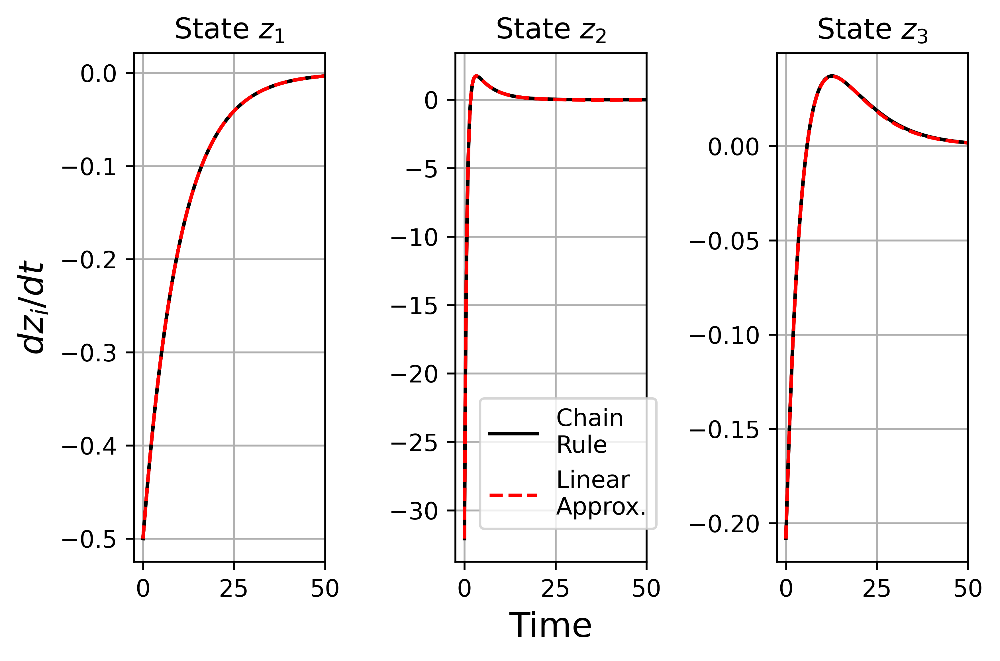

The majority of systems of practical interest are characterised by nonlinear behaviors. This renders the control and optimization of such systems a complex task due to their nonlinear behavithe. Standard methods such as linearizing around a point may not be an effective strategy for many systems. For this reason, they propose a new deep learning framework to discover a transformation of a nonlinear dy-centric system to an equivalent higher dimensional linear representation. They demonstrate that the resulting learned linear representation accurately captures the dynamics of the original system for a wider range of conditions.
This is especially relevant for large-scale systems, often en-countered in systems engineering. Timing of such systems is a vitally important task, but at the same time, this task is a formidable challenge with no general and scalable solution. In contrast, the study of linear systems is well developed with scalable de-riminationsign, analysis, control and optimization. In essence, Koopman operator theory allows for a nonlinear system to be represented as an in-depth dimensional linear system. This may not be generally applicable especially for systems exhibiting strong nonlinearities.
This paper is outlined as follows: In section 2, a brief background of Koopman operator theory is provided, aided with a simple illustrative example. This is followed by an introduction to the proposed deep learning framework in section 3. The proposed method is applied to two examples in section 4: a commonly cited example from the literature and a more complex example in the form of a Continuous Stirred Tank Reactor (CSTR) Challenges and future directions of the proposed approach are also discussed. Finally, the paper is concluded in section 5.
The Koopman operator is linear, but it is also a 2-2 dimensional approximation. In this paper they will demonstrate how this can be achieved using deep learning. They will illustrate the concept with a simple example in section 2.2.1. They also demonstrate how deep learning can be used to solve the problem of deep learning using deep-learners. They discuss the implications of deep-learning algorithms in section 3 of this paper. For example, consider a nonlinear dynamical system defined by a transformation of state x, such as the chain rule: "Kopman"
This is a trivial example for which a closed-form solution can be found easily. The original dynamics are now linear in the new state, z, defined by the transformation given in equation (5) It should be noted that this example is only intended to motivate the idea behind Koopman operator theory. In section 3.1, they will start by formulating the problem applied to the case of nonlinear dynamics with no inputs. They will extend this to system systems with exogenous inputs. Finally they will demonstrate how the learned linear representation can be used to solve the optimal control problem.
The relationship between the new state, z, and the original state, x, can be defined using the chain rule. The new state becomes a variable after the transformation as: 'glyglyglyz' The transformation z = φ(x) is the Jacobian matrix of the transformation, φ. where nx is the dimension of the original system and nz is the dimensions of the new transformed system where nz ≥ nx. In general, equation (12) can not be solved directly, but a closed form solution can be found directly.
Euclidean norm of the difference between equation (10) and (11) can be seen as an optimization over functions, φ, and parameters in matrix A. For most practical problems of interest, optimization over func-centric spaces is generally intractable. An alternative approach would have a set of basis functions that the space of functions can be generated. In particular, neural networks can be regarded regarded regarded as a parametrization of functions where the collection of activation functions are the set of functions while the weights of the neural network serve the parameters.
An additional “decoder’s”task was added to the objective function to re-frame the problem as a regression task for the neural network. This is not a typical task which is usually ascribed to neural networks. As a result of this, stability issues were encountered during training, some of which are documented in the literature Algorithm 1.9/1 is solved as per the work of the authors of and then popularized by Physics Informed Neural Networks (PINNs)
Algorithm for solving equation (18) Algorithm uses IPOPT to solve optimization problem for the examples discussed in this paper. The weighting factor, λ, applied to the decoder term in equation(18) is divided by the decay rate parameter, γ. Equation (18), is solved either to local optimality or until the max-uveimum number of optimization iterations are exceeded. The optimal parameters are assigned to the variable, ˆΘ. The optimization problem was solved using IPOPt.
The original state, x, is transformed via the lifting neural network to obtain the new state, z, which is then subjected to a linear transformation by the matrix A. The Jacobian matrix of the transformation, JN(x), can be obtained via a backward step through the lifting network. Finally, a decoder network is used to transform z back to a reconstruction of the original state. This is done for each sample in the data set giving the optimal set of parameters, Θ = (p, A, q), are returned.
In this section, they generalise this to nonlinear systems with exogenous inputs. They seek a general nonlinear dynamical system with inputs with inputs defined by: f(x, u) and nz (nx) nz is the number of states of the original system, nu is number of inputs to the new system. The new state-input terms (21) may include stateinput terms (for example, terms such as xiuj)
They focus the attention on a class of nonlinear systems where the effects of the states and inputs are decoupled. Control-affine systems are restricted to control-a fined systems. They define the new state variable as before: The new state dynamics are linear. They then expand equation (25) through substitution of equation (22) for the time derivative term, and accounting for the condition they wish to satisfy via the chain rule.
equation (26) is linear in the states, z, but not necessarily jointlyjointly-linear in the inputs and states due to the Jacobian term, Jz(x)B, which may be state dependent. The resulting system is not fully linear, as discussed in section 3.1, but the state-dependent control term does not pose any major issues with regards to control. As before, they parameterize the transformation using a neural network, as per equation (15), which allows us to define the following optimization problem:
They discuss how the optimal control problem can be solved by learning a linear representation of the form of equation (27) This is primarily based on the work of. The study of linear systems is thoroughly developed and the study of nonlinear systems is less developed and no such general and scalable methods exist. However, as noted in section 3.2, the learned transformation is not necessarily jointly linear in the inputs and states due to the potentially state-dependent control term, Jz(x)B. As this term may be statedependent, then linear optimal control can not be applied directly to the original system.
A common extension to the optimal control problem is to solve the state-dependent Riccati equation. This is equivalent to re-solving the Ricatti equation online at each point in time. This gives us a trade-off: on one hand, this is a far easier problem to solve for a nonlinear system but not as simple as that for a fully linear system. The control law is linear in the new state, z, but nonlinear in the original state, x, given the transformation imposed by the network.
In section 4.2, they consider the Continuous-Stirred Tank Reactor system. They also discuss some challenges posed by the deep learning framework, namely over-tting and the pitfalls of dimensionality. They conclude that a closed form solution exists for this system, but this will not generally be the case. They discuss future research recommendations in the context of the challenges discussed throughout this section. For example from the literature,, they consider a Continuous-reactor system
For the proposed deep learning framework, as the transformation is learned from data, it is unlikely that the control term will be state-independent. The resulting transformation may be valid within the range of the training data, but it may be a poor representation outside of this range, as will be demonstrated in section 4.2 and 4.3.2. In this case, although the dynamics of the original system may be faithfully captured by the transformation of equation (25), this can be potentially achieved with many differenttransformations. They can regard the proposed framework as a model that has a broader range of validity than a model linearized via standard methods.
The resulting system, of the form of equation (27), was then used to solve the optimal control problem to control the states to the origin from an initial condition of (x1, x2) = (5, 5) Figure 3 shows the results of the optimization for a given training trajectory in Fig.2. The results for the rest of the data were similar and this is discussed in further detail in section (3.3), and in section 4.3. The model has thus been identified within the bounds of the training data.
The proposed deep learning framework has effectively learned a linearized model which has a larger range of validity in comparison to the model obtained by standard linearization. The results show that the proposed framework performs equivalently to the exact solution (black line) by tightly controlling the states to the origin. However, it is important to note that while these results are promising, this is only within the bounds of the training data. This is further discussed in the section of this article.
Results of optimal control applied to the full nonlinear system with the controller created using a model obtained by standard linearization (red line) and the exact solution (black line) from equation (34) Figure 4:. The Continuous Stirred Tank Reactor (CSTR) Reactor is a CSTR example of a single state control-affine system defined below. They restrict ourselves to the single state-control-a-system. Data was collected by simulation of the system by simulation (36)
The new system representations were simulated for various new random step inputs to the system, while staying within the bounds of the training data range. The resulting reactor temperature data and its time derivative were collected throughout the length of the simulation. This data was then used to solve the optimization problem, equation (29) Fig. 4 shows the results of these simulations for a single example where the new system's new system-dimension was three. The results were similar across the different cases of lifted dimensions.
The problem of over-dimensionality is a major challenge for data-driven solutions to the Koopman operator, with the proposed deep learning framework not being any different. In the last set of numerical experiments, the learned linear representations and the standard linearized model were used to design a controller to track the temperature at the set-point: Tsp = Tss − 10, with initial conditions starting at the fixed point. Figure 4:. The full-renalized model is not valid when perturbed with random step inputs within the training range. The controller was designed to successfully control the reactor temperature when using the full-reviewed model
Figure 5:Simulation results of the full nonlinear model (black line) and the model obtained from the deep learning framework (green dashed line) were used to design a controller to track the system. The resulting control actions were then applied to the nonlinear system giving the results portrayed in their respective colours. The controller was then used to create a controller which was able to control the controller. Tsp = Tss −10.000; Tsh = Tsp + Tss -10.00; Tsp is Tss + Tsh: Tsh, Tsh + Tsp, Tss = Tsh -Tsh +T
A closed form solution exists for the original system, as defined by equation (5) They can use the proposed deep learning framework to investigate the trans-forming transformation which is learned by the neural network. The results of the optimization are shown in Fig. 7. It is both in good agreement within the train-forming data range suggesting that a successful model has been identified with the proposed frame-around-the-front-view. The black line represents the exact time derivative calculated from the chain rule i.e. dzophobicdt = Jz(x)
The results of the deep learning framework applied to the motivating example from section 2.2 defined by equation (4) The results highlight the key points which were made regarding over-tting in section 4.1 and 4.2. The proposed framework successfully learns a linearized model which can be used validly as long as the system remains within the training data range. However, outside of this range, the two curves diverge i.e. the learned linear approximation given by dzdt = Az does not satisfy the orig-inal system dynamics.
The above arguments can also be extended to higher dimensional systems. To demonstrate this, they now reconsider the system from section 4.1 defined by equation (32) Fig. 8 shows a subset of state-space for the de�Áned system. The system trajectory stays within the region in which the learned linear model is valid. As the system remains within this region, the model can be used with con fidence. This results in the successful control of the system as shown in Fig. 9.
A subset of state-space for the system defined by equation (32) In this case, the system stays within the region in which the learned-linear model is valid i.e. the yellow cuboid. The controller, designed using the learned linear model, performs poorly even in comparison to the model obtained from standard linearization (red line) The controller fails to regulate the unstable state, x2, to the same point as standard linearizing.
The model learned by the deep learning framework was trained with a limited dataset resulting in the poor control of the system. Figure 10:Results of optimal control applied to the full nonlinear system with the controller using a model obtained by standard linearization (red line), the exact solution (black line) from equation (34) and the model obtained from the deep-learning framework (green line) Note that, in this case, the model was learned by a model trained with the limited dataset, as depicted by the dashed line.
The green curve defines the system trajectory from Fig. 8 and the. corresponding dataset used for training is represented by the transparent cuboid with black dashed edges. On the other hand, the red curve shows the. system trajectory moves outwith the region in which the. learned linear model is valid. This results in the poor control of the system as depicted by the green dashed curves in Fig. 10. In contrast, the green curve shows. the states are regulated to the origin under the action of the controller.
A large and broad dataset is needed to effectively learn a linearized model using the proposed framework. This is so that the model can be used with confidence within the range of interest. A comparison of the trajectories and datasets from Fig. 8 and 11. The model is an accurate representation of the system within the corresponding training range (transparent cuboid) which the system never leaves. The dataset is based on the parameters of the model.
There are already many methods which could be used to alleviate the issues caused by the curse of dimensionality. Most systems of practical interest are typically high dimensional, especially, the systems which are commonly studied within process systems engineering. This is an area of active research and a challenge which they hope to address in future work. They have successfully demonstrated how the proposed deep-deteriorlearning framework can be used for learning a higher dimensional linear representa-ativetion of a nonlinear system there are still a number of future research directions.
Over-ting is a challenge which faces all data-driven Koopman approaches. In section 4.3, they alluded to the challenges posed by higher dimensional problems when applying the proposed framework. The resulting model can then be used for a wider range of operating conditions than a standard linearized model. This is an area of research which they intend to investigate as a path for future work. In the current work, the optimization of equation (29), re-focused on the use of second-order optimization algorithms. This is not common for most deep learning approaches, which instead rely on gradient descent.